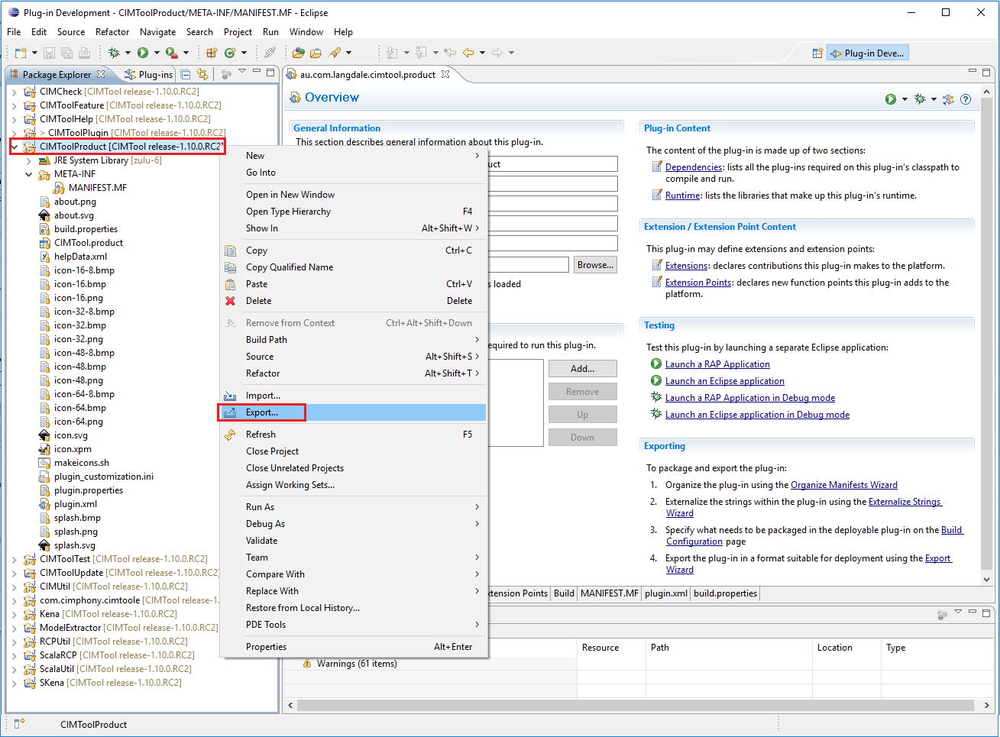
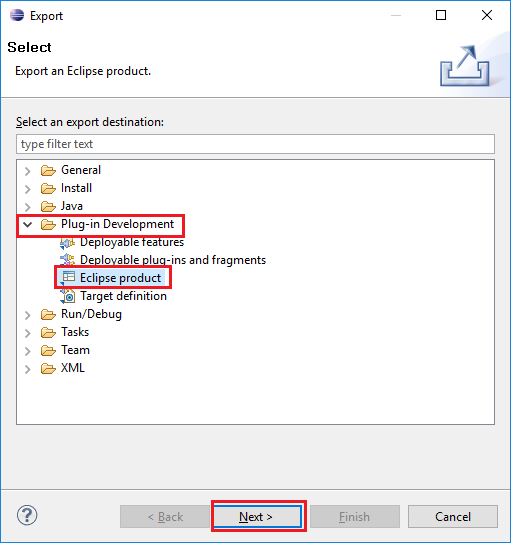
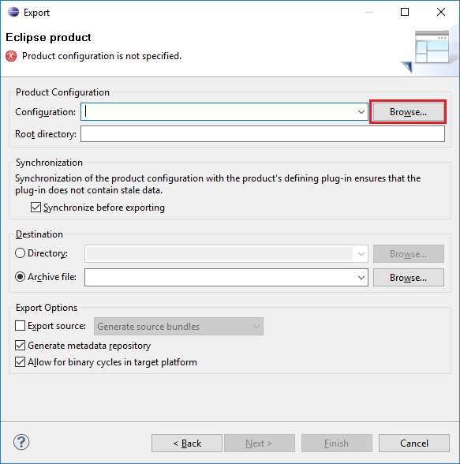
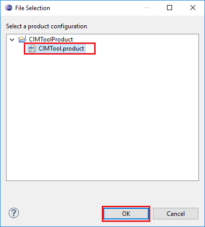
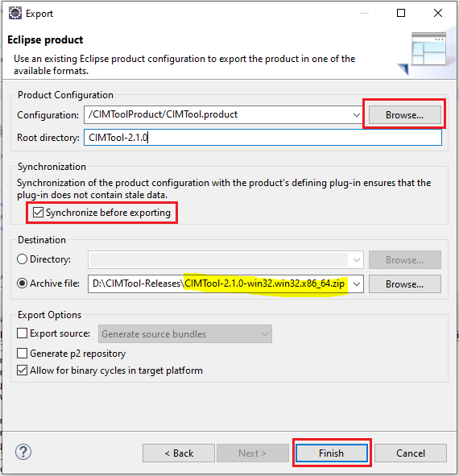
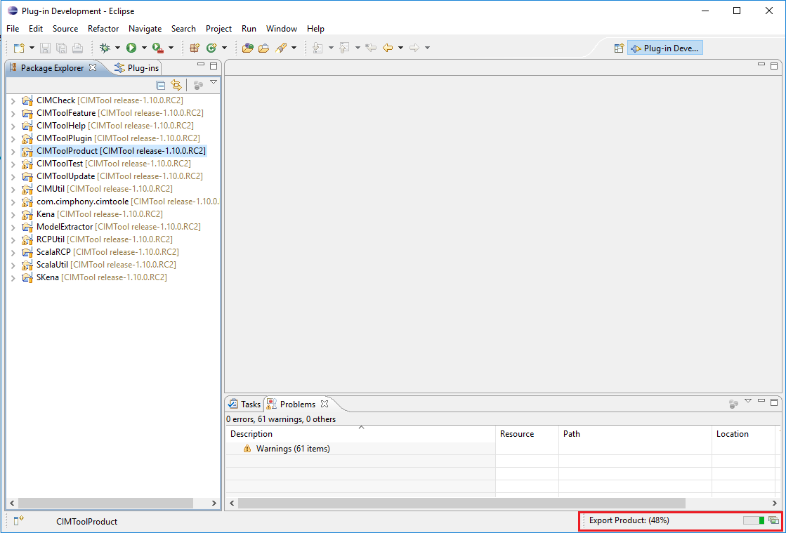
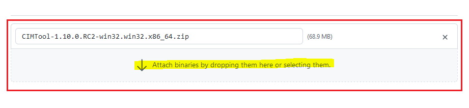

Packaging & Deployment Guide
These instructions are for developers and maintainers of CIMTool that need to package and distribute the binaries as an Eclipse Product. Most users of CIMTool don't need to be concerned with these details.
Note
It is important to highlight that the set of CIMTool plugins is not distributed from a plugins update site as with other Eclipse plugins. Rather, CIMTool is packaged and deployed as an Eclipse Product.
Packaging & Deploying CIMTool as an Eclipse Product
Step 1:
When preparing for a new release of CIMTool, if not already applied earlier in the development process, then all MANIFEST.MF files for all CIMTool plugin projects must be updated to reflect any updates to their versions since the last release. Note that some projects may not have changed and consequently may not require a version update.
Industry standard semantic versioning rules must to applied when determining the versions of both CIMTool plugin projects as well as for individual release version of the CIMTool Eclipse Product. (Refer to Semantic Versioning 2.0.0 for further information).
Step 2:
From within Eclipse:
- Select the CIMToolProduct project and right mouse click and select the Export menu option as shown.

- Next, select the Eclipse product export type and click Next.

Step 3:
The Export dialog screen will appear. An existing Eclipse product configuration file must be selected for export.
- To select a configuration click the "Browse..." button.

- Select the existing production configuration as shown then click the OK button.

Step 4:
The Export dialog provides two destination options for exporting the CIMTool Product. Either option will work, however, if not exporting directly as an archive then additional manual steps are required to package CIMTool.
The configuration settings highlighted in the next screenshot are for exporting as an archive. A couple of items to highlight:
-
The Root directory field is required and specifies the name of the directory that will appear within the archive file and which will serve as the root directory when extracting. For the purposes of CIMTool a naming convention that includes the semantic version should be matched to that for the release being deployed:
CIMTool-x.x.x(e.g. CIMTool-2.1.0) -
The "Synchronize before exporting" option should be checked.
-
The Archive file field allows for the selection (i.e. Browse...) of a directory to which to export the CIMTool Product ZIP archive. Note that the screenshot illustrates an example of the CIMTool project naming conventions for archive file names:
CIMTool-<release-version>-<os>.<os-variant>.<architecture>.zip
The x64 architecture is a backwards-compatible extension of x86. It provides a legacy 32-bit mode, which is identical to x86, and a new 64-bit mode. The term "x64" has included both AMD 64 and Intel 64. The instruction sets are close to identical. As of today, the x86 architecture is no longer being supported for new releases of CIMTool.
| OS | Example Archive Name | Comments |
|---|---|---|
| Windows 64-bit | CIMTool-2.0.0win32.win32.x86_64.zip | For 64-bit Java (Windows 7, 8, 10, 11) |
| Windows 32-bit | CIMTool-2.0.0win32.win32.x86.zip | For 32-bit windows or 64 bit windows running 32 bit Java. |
| Linux | CIMTool-2.0.0linux.gtk.x86_64.zip | Linux 64-bit |
| Mac OSX 64bit | CIMTool-2.0.0macosx.cocoa.x86_64.zip | Mac OSX 64-bit |
Once the export settings have been entered click the Finish button.

Step 5:
During export, the progress of the export will appear in the Eclipse status bar in the lower right hand corner.

Step 6:
When completed the exported archive file is ready to be released. This should be done at the time release notes are created and dropping the *.zip archive onto the area in the release notes shown next.
